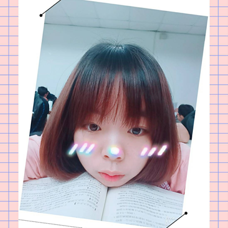
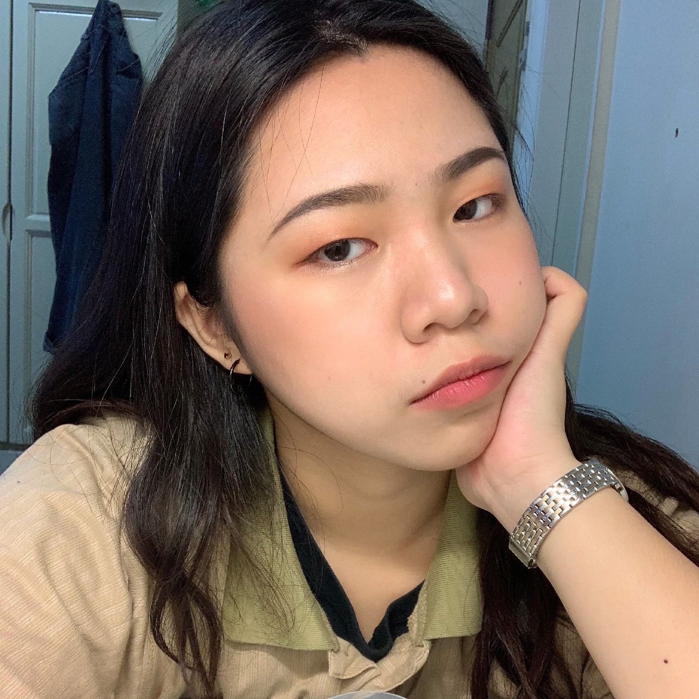

組員資料

吳怡穎
後端撰寫 & 書面
我叫吳怡穎，是中原資管四年級的學生。我是一個很兩極化的人，我可以很懶惰，也可以很積極，全看我是不是有事可以做，要不然我就會選擇組積木之類的活動，來消磨時間。
這是我第一次真正自己參與一個完整的專案，感覺很新鮮，但也很累，因為我們只有2個人，所以總感覺時間不夠用，又總是希望能凡事都做到好，不過也很幸運的，我們的希望算是達成了，複審的時候，報告的很順利，做出來的系統又符合我們對自己的期望，幾大功能都做了出來，或許並沒有到很完美，但是至少很完整。 在複審結束後，我想要跟這一路上陪伴我們和給予我們幫助的大家說聲謝謝，沒有你們的提點跟建議，就不會有現在的樣子，沒有你們的陪伴與鼓勵，就不會有報告當天自信的我們；沒有你們的不認同與異議，就不會讓Ms.Venus更加的完整，謝謝你們 最後，我要跟我的組員說聲謝謝跟抱歉，謝謝你的一路陪伴與包容，抱歉我有時就像一個小孩子，讓你費心了，辛苦你了，雖然專題結束了，但不代表我們之間的連結就斷了，後續還是會一直相連的!!

系統的前期開發已到一段落，Ms.Venus也算有了初步的雛形。這一年來，我們經歷了許多開發上的衝突、困難，在解決的同時，也讓我收穫甚廣。像是我們在一開始針對系統方向的討論，究竟要朝單一功能去開發，還是要著重在整體功能的統整；後來因時間與人手不足，不得不調整部分功能的爭執與相互妥協，我認為經歷了這許多，我學到最重要的並不是程式撰寫能力的精進；而是學著如何堅持自己的選擇、如何相互妥協與讓步、如何更全面性看事情等，這些許許多多都是在書上學不到的。
賴姵媗
前端撰寫 & 介面設計 & PPT
我叫賴姵媗。本身個性有點懶散，但是一旦做起事來會比較固執，所以這次是負責前端跟美工方面~